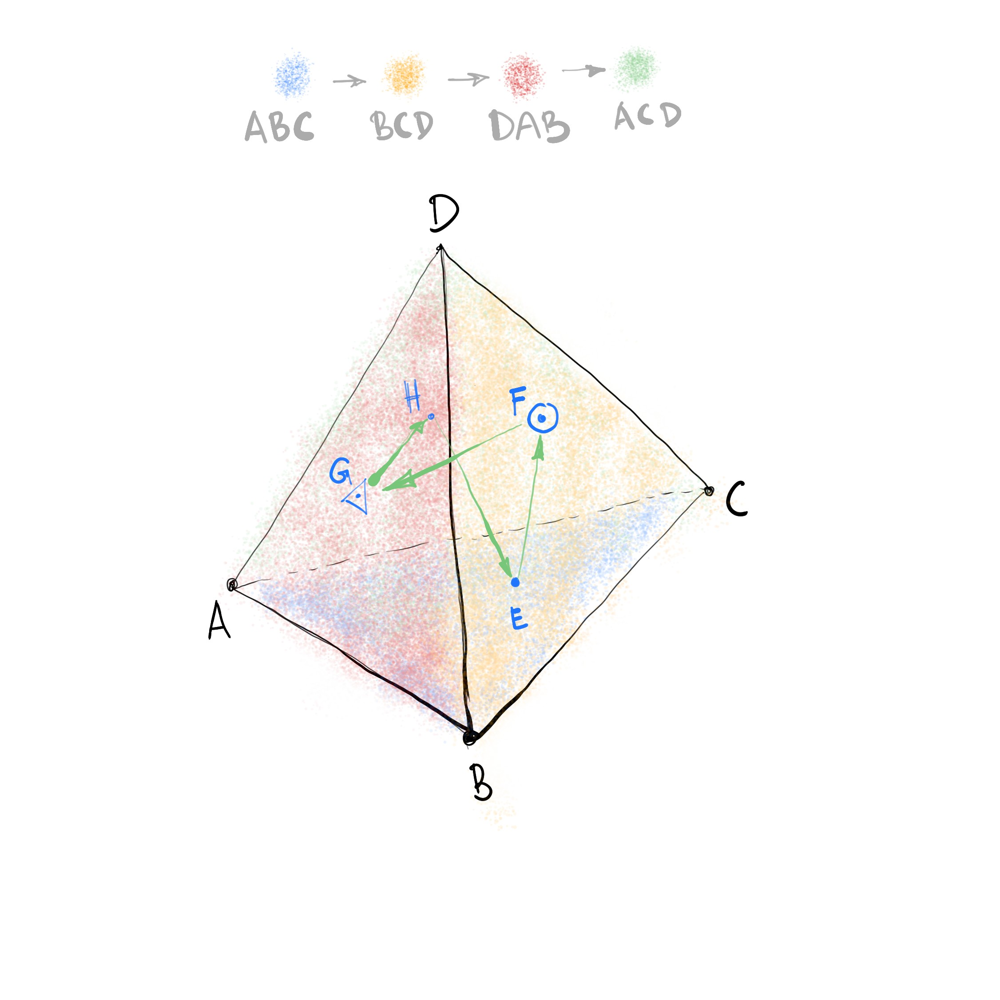
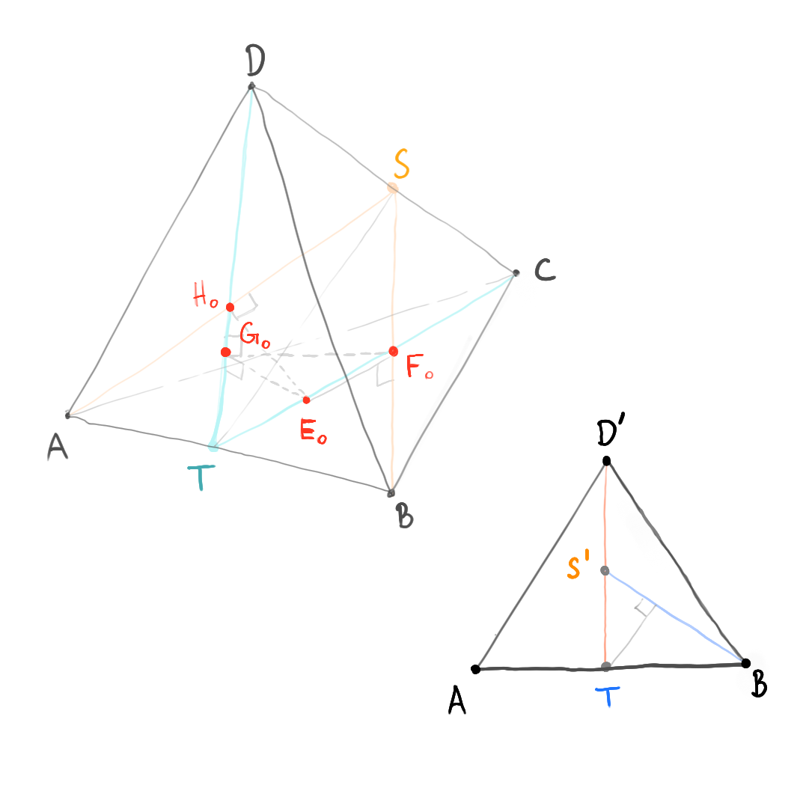

Traversing a Tetrahedron
This note was inspired by the problem 5 in Moscow Mathematical Olympiad 1993.
Problem
Suppose you operate a fancy drone inside a mysterious pyramid your friends have dug out recently. This pyramid is uniquely shaped as a perfect tetrahedron with a side \(a\). What is the minimum distance required to visit each side and return to the starting point?
Analysis
Let’s introduce some notation to make our analysis easier and denote our tetrahedron as \(ABCD\). Suppose that the drone visited all the sides and returned to the starting point. Without loss of generality, since the pyramid is mysteriously perfect, we may assume that the sides were visited in the succession from \(ABC\) to \(BCD\), from \(BCD\) to \(DAB\), and from \(DAB\) to \(ACD\). We will mark the points at which the drone visited the side as \(E, F, G, H\) respectively. We are given that the minimum distance the drone must traverse is the perimeter of the spatial quadrilateral \(EFGH\). See the figure below.
Construct a plane perpendicular to \(AB\) through \(DC\). Let the point of intersection of this plane with \(AB\) be denoted as \(T\). Note that this plane is a plane of symmetry for our tetrahedron. Now, reflect the points of \(EFGH\) through the constructed plane to obtain a quadrilateral \(E_1F_1G_1H_1\). Notice that the point \(E_1\) will be on the side \(ABC\), just as a parent point \(E\). The situation is similar with the points \(G_1\) and \(G\), both on the side \(DAB\). \(F_1\), however, will fall on the side \(ACD\), on which the point \(H\) is located, and \(H_1\) will fall on the side \(BCD\), containing \(F\). Since the constructed plane is a mirror plane, perimeters of \(EFGH\) and \(E_1F_1G_1H_1\) are equal.
To proceed, we prove a handy lemma.
Consider an arbitrary spatial quadrilateral \(KLMN\). Let \(P\) and \(Q\) be the points of \(KL\) and \(MN\) respectively. Then \(PQ \leq \frac{1}{2} (KN+LM)\).
The lemma is depicted below.
Let \(R\) mark the midpoint of a diagonal \(LN\). Since \(PR=\frac{1}{2}KN\) and \(RQ=\frac{1}{2}LM\) from the similarity of corresponding triangles, by the triangle inequality we know that \(PQ \leq PR + RQ\), which proves the lemma.
Now, let \(E_2, F_2, G_2, H_2\) be the midpoints of the segments \(EE_1\), \(FH_1\), \(GG_1\), and \(HF_1\) respectively. Vertices of the quadrilateral \(E_2F_2G_2H_2\) also lie on the sides of the tetrahedron. The perimeter of \(E_2F_2G_2H_2\) is less than the perimeter of \(EFGH\), as follows from our lemma. To convince yourself, see the figure to the left.
Moreover, the points \(E_2\) and \(G_2\), which are midpoints of \(EE_1\) and \(GG_1\) respectively, are going to belong to the plane of symmetry \(TCD\) we have constructed earlier. Notice that \(CT\) and \(DT\) are medians of the sides \(ABC\) and \(ABD\).
Now, mirror the quadrilateral \(E_2F_2G_2H_2\) in the plane \(ABS\), where \(S\) is the midpoint of \(CD\), to obtain \(E_3F_3G_3H_3\), and then, taking the midpoints of the segments defined by the points of \(E_2F_2G_2H_2\) and \(E_3F_3G_3H_3\) sharing the same side, construct the quadrilateral \(E_4F_4G_4H_4\). Consult the diagram below:
This quadrilateral is special in the following sense: \(E_4\) and \(G_4\) belong to the segments \(CT\) and \(DT\), while vertices \(F_4\) and \(H_4\) lie on the medians \(AS\) and \(BS\) of the sides \(ACD\) and \(BCD\), as seen in the figure:
Similarly, the perimeter of \(E_4F_4G_4H_4\) is not bigger than the perimeter of \(EFGH\). Therefore, the perimeter of \(EFGH\) is not less than \(4d\), where \(d\) is the distance between the lines \(CT\) and \(BS\).
All we need to do now is to find a path of length \(4d\) and compute \(d\).
Let \(E_0F_0\) denote the line perpendicular both to \(CT\) and \(BS\), with \(E_0\) belonging to \(CT\), and \(F_0\) lying on \(BS\). Let \(G_0\) be a point symmetric to \(E_0\) with regards to the plane \(ABS\). From symmetry in the plane \(ABS\) we can deduce that \(F_0G_0\) is a common perpendicular of \(BS\) and \(DT\).
Proceeding in a similar way, we construct a point \(H_0\), such that \(G_0H_0\) and \(H_0E_0\) are common perpendiculars of \(DT\) and \(AS\), and of \(AS\) and \(CT\) respectively.
The quadrilateral \(E_0F_0G_0H_0\) has a perimeter of \(4d\). We need to make sure, however, that the points of these common perpendiculars lie on the sides of our tetrahedron, and not on their continuations. Meanwhile, we will also calculate \(d\).
Erect a plane through \(AB\) perpendicular to the base \(ABC\). Project our tetrahedron on this plane to obtain a triangle \(ABD'\), in which \(AB = a\), \(D'T = \sqrt{\frac{2}{3}}a\), since \(D'T\) is the height of a regular tetrahedron, and \(S'\) is the projection of \(S\) corresponding to the middle of \(D'T\).
Since \(CT\) is perpendicular to \(AB\) and thus the common perpendicular of \(CT\) and \(BS\) is parallel to the plane of projection, the distance from the point \(T\) to \(BS'\) in the triangle \(ABD'\) has the length of exactly \(d\). Moreover, since the base of a perpendicular from \(T\) to \(BS'\) lies inside \(ABD'\) on the segment \(BS'\), then \(F_0\) belongs to \(BS\) and not to its continuation. Similarly, all the other points of the quadrilateral can be shown to lie on the medians themselves.
Now, after all the work we have done, it is easy to compute \(d\). We know that \(BT = \frac{a}{2}\) and \(TS' = \frac{a}{2}\sqrt{\frac{2}{3}}\). Therefore, by the Pythagorean theorem, \(BS' = \frac{a}{2}\sqrt{\frac{5}{3}}\).
Now, the area of the triangle \(BTS'\) is \(\frac{1}{2} BT \cdot TS'\), and also \(\frac{1}{2} d \cdot BS'\), and hence \(d = \frac{BT\cdot TS'}{BS'}\), which means that \(d = \frac{a}{\sqrt{10}}\).
Conclusion and Discussion
Our fancy drone must cover the distance of \(\frac{2 \sqrt{10}}{5} a\) to traverse the walls of the mysterious pyramid efficiently. Moreover, our analysis has also shown that the number of the most efficient paths is exactly three, for each choice of two planes of the tetrahedron mirror symmetry.
We could also ask ourselves an analogous question about a tiny crawling robot inside a triangle with sides \(a, b, c\). What is the least distance required to visit each side and return to the initial position? For an acute triangle, this problem is also known as Fagnano’s problem.
What can we say about simplices in higher dimensions?